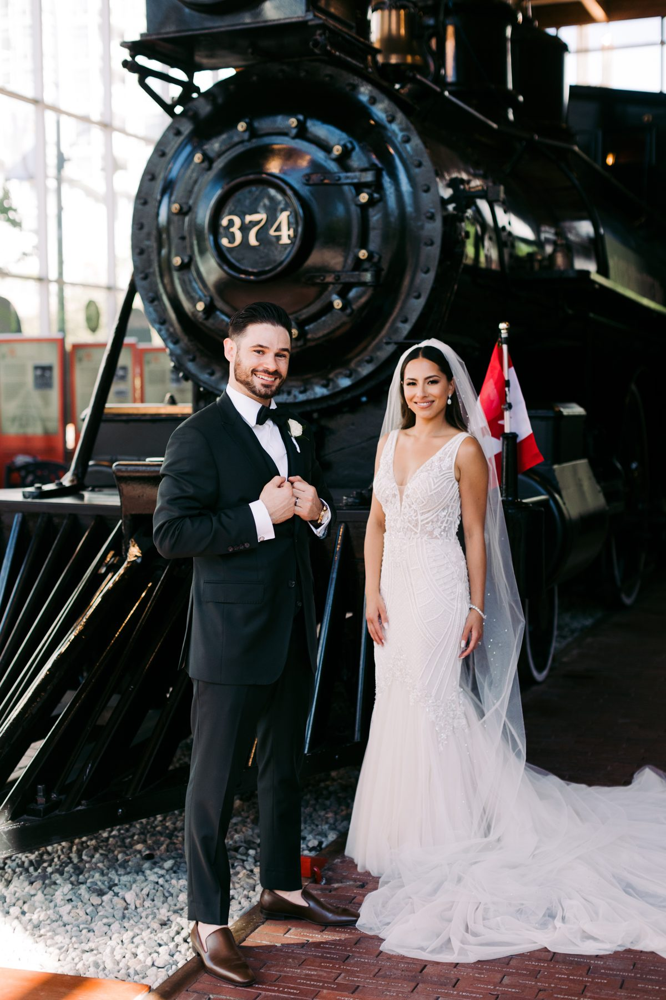
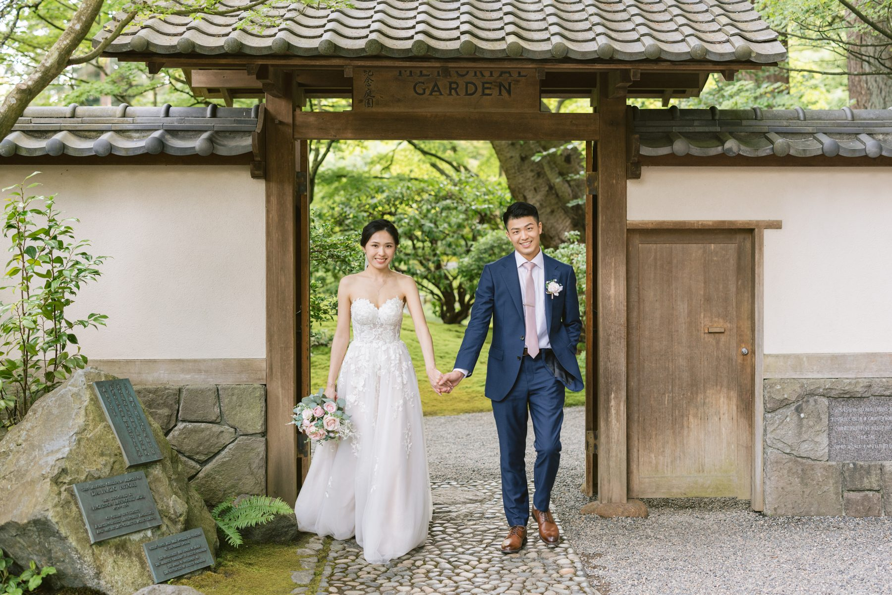

Real days, planning advice, and the places around Vancouver worth getting married in. Written for couples who are in the middle of figuring it out.

What to ask beyond the portfolio: backup plans, file protection, delivery time, second shooters, contracts, and why raw files are the wrong ask.

Where wedding day timelines actually break, the 15 minute buffer rule, and a sample 8 hour schedule that holds.

Lauren and Nicholas married in August with a vintage convertible, a steam locomotive photo stop, cigars, and a Roundhouse reception in Yaletown. What a venue with a story does for your photos.

Demetra and Johnny married in a Greek Orthodox church in Vancouver, then partied under a clear tent beside the river. How to plan photography for a long traditional ceremony and a big night.

Sara and Vincent married in Nitobe Memorial Garden at UBC. A red gown tea ceremony, a first look on a staircase, a white convertible, and why a garden suits a small guest list.

Fiona and Shomari got ready on a downtown hotel balcony, married on a lawn at the edge of the water, and partied under a chandelier tent. The plan worth copying, and why a grey sky helped.

Bessie and Raymond married on the covered terrace at Hycroft Manor on a grey day. A tea ceremony, guests under umbrellas, and why this venue gives you four looks in one footprint.

Teresa and Victor married at Hycroft Manor on a snow day. A morning tea ceremony at home, a corgi in the street, and what a mansion with real rooms does for a Vancouver winter wedding.

What candid wedding photography really means, where posed still wins, and how to tell what a photographer actually shoots.

Choose by vibe, not by popularity: rocky coast, field, rainforest or city edges, and why timing beats location.

Why 30 guests is a real wedding, how to pick the room, where small weddings should spend, and a timeline that fits.

What 5, 8 and 10 hours of coverage actually get you, real prices, and why adding hours later costs more.

What a wedding content creator shoots, why one person should not do both jobs, what the SOCIAL package costs, and who should skip it.

What a first look buys you, what the aisle reveal gives you that nothing else can, the middle option people forget, and three questions that settle it.

What ages badly, what holds up, how to coordinate without matching, and the two outfit plan we give every couple before they go shopping.

It rains here. Why overcast is the light we would have picked anyway, what actually goes wrong on a wet wedding day, and the rain plan worth making in month two.

Sarah and Josh married at the UBC Boathouse in Richmond on the hottest weekend in July. Umbrellas for shade, donuts instead of cake, and why west facing water is a light source and not a view.

Havana and Eric married in a Tudor heritage house in Burnaby with twenty guests and steady October rain. Why the weather made the day better, and what a white umbrella is actually for.

Emma and Hossein married on an open deck above Burrard Inlet in late July. The whole day in one building, and an honest look at what a rooftop charges you for that view.

Christine and Hugh married twice in one day. A tea ceremony at seven in the morning, then a gallery on the Shipyards waterfront with the skyline sitting in the window.

Chelsea and Andrew married in a ballroom made of glass, took portraits on a rooftop garden four floors up, and had half their family watching from a screen in the corner.

An honest line-item breakdown of what a Vancouver wedding costs in 2026 — venue, catering, photography, florals — and where we'd actually cut.

A two-look Vancouver engagement session — spring gardens near UBC by day, golden hour on English Bay by evening. Eunice & Ashan, by SimplyWed Studio.

A West Vancouver oceanside engagement session on the rocky Howe Sound coastline — soft daylight to golden hour, sea islands, and sparklers at dusk, by SimplyWed Studio.

A luxury wedding at the Fairmont Hotel Vancouver — gilded ballrooms, cascading orchids, and timeless black-tie elegance. Jayleen & Ryan's day, by SimplyWed Studio.

Planning a Vancouver elopement? Here's everything you need — choosing a location, the BC marriage licence, hiring a photographer, and nailing your day-of timeline.

Summer isn't always the best season for a Vancouver wedding. An honest, season-by-season breakdown of light, weather and crowds — from a Vancouver wedding photographer.
Looking for a small wedding venue in Vancouver? Six stunning spots for intimate ceremonies and micro weddings — with the views and atmosphere to match.
The best places to elope in Vancouver — from old-growth forest and rugged coastline to mountain peaks — chosen by a local Vancouver elopement photographer.
More Vancouver couples are choosing elopements over big weddings — less stress, more meaning. Here's why, and what an intimate day can look like.